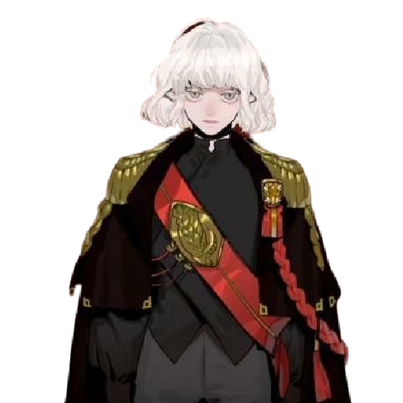

Lampiões da Luz
Os viajantes da luz em uma jornada contra a escuridão do mundo
Em meio à Guerra Rubra muitos foram deixados para trás, mortos são jogados à pilhas em fogueiras e rios. Vocês porém são a luz que persiste iluminando até os mais perversos com sua luz, garantindo que a escuridão não prevaleça ante a bondade dos Deuses.

Alíris, O Prateado
Acólito da Deusa Lua, o cuidador e curandeiro da Luz Prateada.

Aric, O Iluminado
Um estudioso sedento por conhecimento, vindo de um passado misterioso com grandes descobertas em seu caminho

Ivernn, O Renascido
Abençoado pela Grande Mãe Terra, Rontra, Ivernn enfrentou um passado marcado por crimes terríveis. Após ser absolvido, recebeu uma segunda chance para viver entre os vivos novamente.

Vasha, O Lunar
Seu passado sombrio foi redimido pela Luz Lunar, agora o trazendo de volta às emoções da vida